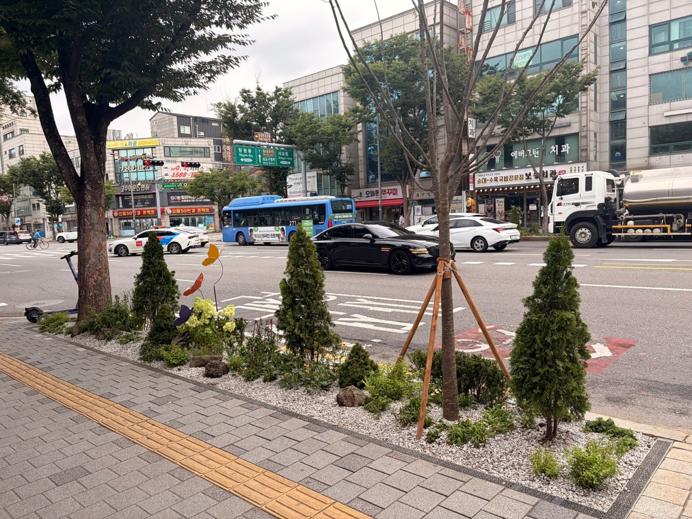

마포구, 월드컵로·양화로 2.5km 그늘목 정원길 조성 완료
특별조정교부금 3억 2000만 원 투입, 수목 1414주·초화류 4605본 식재

[시사포커스 / 김재록 기자] 마포구(구청장 유동균)가 지난 9월 4일 월드컵로와 양화로 일대 총 2.5km 구간에 그늘목 정원길 조성을 완료했다고 8일 밝혔다. 이번 사업에는 서울시 특별조정교부금 3억 2000만 원이 투입됐으며, 한뼘정원 60곳(141.5㎡)과 도로변 녹지대를 연결한 띠녹지 13곳(184㎡)이 보행로를 따라 조성됐다. 해당 구간에는 느티나무, 수국 등 수목 1414주와 다양한 초화류 4605본이 식재됐다.
마포구에 따르면, 이번 조성 구간은 한강공원을 이용하는 주민들이 평소 자주 지나는 보행로였으나 가로수인 느티나무 뿌리가 지표면 위로 자라나면서 보도블록을 밀어 올리는 현상이 발생해 보행자 안전을 위협해 왔다. 이에 구는 가로수 뿌리를 정리하고 정원길을 조성했으며, 솟아오른 뿌리로 인한 토양 유실을 막고 빗물 저장과 수분 관리 기능을 갖춘 특수 경계엣지와 틀을 설치해 향후 뿌리 융기를 방지했다. 이번 정원길 조성은 마포구의 핵심 녹화 사업인 ‘다시 500만 그루 나무심기’와 연계해 추진됐으며, 미세먼지 저감과 열섬 현상 완화 효과도 기대된다.
유동균 마포구청장은 “도심 속 녹지공간은 기후위기와 미세먼지로부터 구민 건강을 지키고 정서적 휴식을 선사하는 중요한 생태적 자산”이라며 “철저한 사후 관리와 예산 확보를 통해 구민들이 안심하고 걸을 수 있는 녹지 공간을 꾸준히 늘려가겠다”고 말했다. 마포구청은 단순 식재에 그치지 않고 지속적이고 체계적인 사후관리로 나무와 꽃의 생육 정착률을 높이고 도시숲의 생태적 기능을 극대화할 계획이다. 나아가 다양한 재원을 확보해 생활권 내 도심숲을 지속해서 넓혀갈 방침이다.